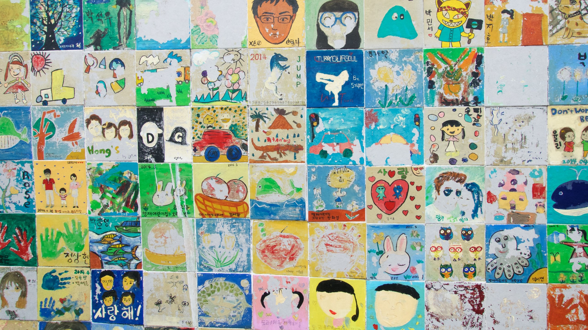
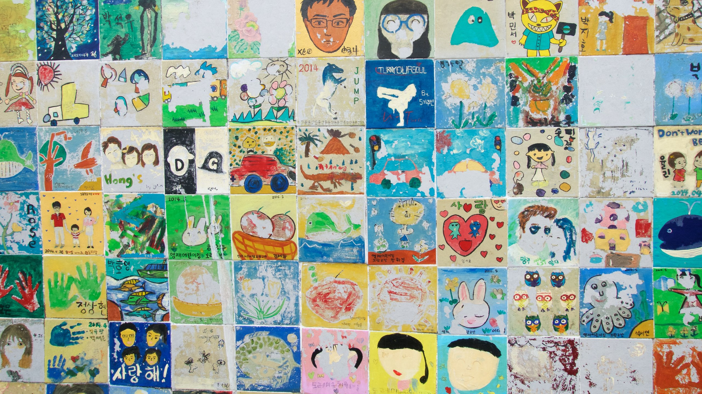

동피랑 관리주체가 푸른통영21에서 통영RCE로 넘어가면서 새로운 주민과의
대화가 필요했다. 2년마다 시행해 오던 벽화축제가 올해에는 총선으로 가을로
연기되면서 동피랑벽화축제 준비를 위해 새로운 조직이 꾸려졌다. 이 팀은
가장 먼저 동피랑 주민들의 욕구가 무엇인지를 파악하는 게 급선무였다.
지난 2월부터 5월까지 총 10회 이상 주민들과 대화에 나섰다.
과거 푸른통영21의 위원장을 비롯 동피랑협동조합 사무국장, 조합원,
동피랑에서 가게를 하는 주민 등을 대상으로 올해 동피랑 벽화축제를 어떻게
하는 것이 좋은지 조언구하기에 나섰다. 이러한 사전조사를 바탕으로 지난
6월 10일 동피랑 벽화축제를 위한 마을주민회의를 개최했다.
이날 벽화축제 일정을 가을로 잡고 작업이 마치면 기념행사 및 마을잔치를
열기로 했다. 또한 6월 중순부터 벽화축제의 주제선정과 설문조사에 착수함과
동시에 벽화 선별조사를 통해 121개의 벽을 선별했다. 또한 벽화축제 진행을
위한 주민운영위원 8명을 선출하고 축제에 소요되는 예산을 바로알기 위해
주민참여 예산학교를 지난 7월 8일부터 29일까지 총 4강을 운영한 결과 총
120명이 참가해 주민스스로가 제5회 동피랑벽화 축제 예산안을 확정짓기도
했다.
주민참여 예산학교에서는 주민참여 예산제의 이론과 좋은 예산 나쁜 예산의
사례를 공부하기 위해 부산 닥밭골 벽화문화마을을 선진답사하기도 했다.
이러한 과정을 거쳐 직접 주민들이 참여한 가운데 예산안을 짜고 벽 선별도
주민들이 선정토록 했다. 이러한 결과 주민들이 하나둘 변하기 시작했다.
그동안 관리 주체의 교체로 벽을 쌓아오면서 불신만 키워오던 주민과
통영RCE간의 벽이 하나둘 무너지기 시작하고 오히려 주민들의 제안이
늘어갔다.
축제개최에 따른 날짜와 예산, 벽배치 등이 확정되고 동피랑 벽화참가자를
모집, 70개팀을 대상으로 오리엔테이션을 지난 9월 24일 개최했다. 이날부터
본격적인 벽화 그리기가 시작됐다. 관광객과 시민 지역 내 유치원 초등생을
대상으로 시민공동 벽화그리기와 벽화 타일그리기, 연만들기 등 벽화축제
체험프로그램을 운영했다. 오는 28일 벽화그리기를 마치고 그린 이들과
마을주민 행사를 준비한 이들이 함께 모여 마을축제를 연다. 마을주민과 함께
동피랑이라는 뮤직비디오도 만들었다. 마을주민들이 춤추고 게스트로
출연했다. 내용은 모두 동피랑 이야기다. 이날 마을주민 중 가장 연세가 많은
분이 나와 동피랑의 옛이야기를 들려준다. 올해는 주민이 주인공이다.